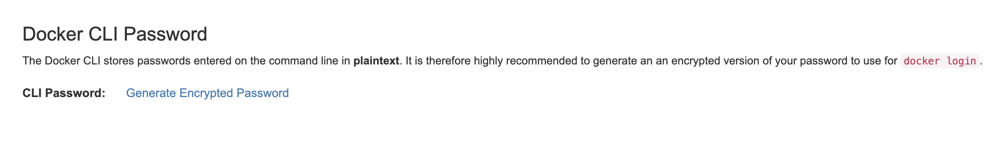
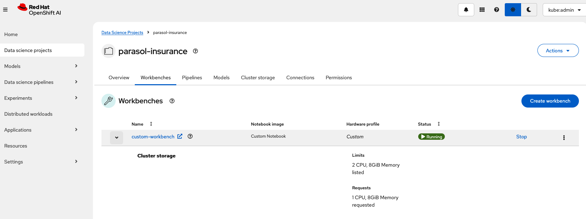

Custom Notebook in RHOAI
Need for custom notebooks
RHOAI provides many pre-built notebooks like Standard Data Science notebook, Tensorflow notebook, Pytorch notebook etc. Data scientists can spin up these notebooks and start running their experiments and creating their machine learning models without much set up.
These inbuilt notebooks come with most of the packages that one would need to run their Data Science projects. But the world of Data Science and Machine Learning is vast and there might be a need to download other python packages.
In this case, the user can use the pip install command inside the notebook but this might lead to issues like kernel mismatches or limited visibility and control.
The best and recommended solution in this case is to create a custom notebook. RHOAI has made it extremely easy to import a notebook image from any image registry.
In the AI267 course, the content teaches you how to create a custom notebook image by taking an existing notebook image and adding additional python packages to it. This is a great way to create a custom notebook image, but what if you or your customer needs to create a custom notebook image from scratch or need to customize the notebook image even more. Your customer may need to know what is in the notebook image itself, or they may need to add additional software (such as database drivers) to the notebook image. We can utilize the notebook repository: https://github.com/opendatahub-io/notebooks/tree/main to create a custom notebook image from the ground up. This repository where ODH and RHOAI workbenches are being created from. Let’s use this repository to create a custom notebook image.
Notebooks Repository
The notebooks repository uses a makefile to create the notebook image. The makefile is a file that contains a set of directives used by a make build automation tool to build a set of target images. It utilizes a build chain feature where it builds the base image first and then builds the images on top of the base image.
Take a look at the developer guide to understand the notebooks build chain.
The notebooks repository also has a Wiki of the different variations of images here: https://github.com/opendatahub-io/notebooks/wiki/Workbenches
Steps to create a custom notebook
| You can either use your local machine or a container to build the custom notebook image. The steps are the same for both except for the setup of the environment. |
Using your dev workstation:
The following steps are to make sure you have the necessary tools to run the notebooks repository on your local machine.
-
Make sure you have Python 3.12 installed on your machine. You can use the
pyenvtool to manage your Python versions. Also install Pip for installing Python packages. Tested with version pip 25.0.1 -
Install make (or gmake) on your local machine. Make is a build automation tool that automatically builds executable programs and libraries from source code by reading files called Makefiles which specify how to derive the target program. We need make version 4+ to build the notebooks repository.
-
Install uv on your local machine. UV is a fast Python package installer and resolver written in Rust. It provides fast, reliable dependency resolution and package installation. Tested with version 0.8.12
-
Install go on your local machine. The Go programming language is an open source project to make programmers more productive. Tested with version 1.24.0
-
Install podman on your local machine. Podman is a tool to manage OCI containers and pods. It is a daemonless container engine for developing, managing, and running OCI containers on your workstation. Podman is a drop-in replacement for Docker. Tested with version 5.3.0
Using Podman to run the builder container:
We have created a container image that contains all the necessary tools to build the notebooks repository. This image is based on the repository: https://github.com/containers/image_build. You can find the image contents here: https://github.com/redhat-ai-services/rhoai-platform-foundation-bootcamp-instructions/tree/main/custom-notebook-builder-container/podman/Containerfile. This image is based on the latest fedora image and contains: podman, git, make, which, go, pip, python3.12 and uv.
The image has already been built for you and is located here: quay.io/asheet/custom-nb-builder-container:latest.
We can run this image using Podman and build/push our custom notebooks from within the container.
-
Run the following command to run the container on podman:
podman run -it --privileged --name custom-notebook-builder quay.io/asheet/custom-nb-builder-container:latestIf running on an M-powered Mac, you will need to use the --platform linux/amd64 flag to run the container.
podman run -it --privileged --platform linux/amd64 --name custom-notebook-builder quay.io/asheet/custom-nb-builder-container:latestThis will run the container and you will now be inside the container.
Using the notebooks repository to create a custom notebook image
-
Log into quay.io from your web browser.
If you get an error saying your account is already associated with an existing Quay account.
If you get this error:
The e-mail address your-username@redhat.com is already associated with an existing Quay account. Please log in with your username and password and associate your Red Hat account to use it in the future.
The error message you see can be remedied by the following steps:
-
Please go to https://recovery.quay.io/signin/ and sign in with your existing Quay.io email address and password.
-
Once in, open account settings, click on "External logins" on the left side, and then on the "Attach" link.
-
Go to quay.io/signin and enter your RHCP data and you should be set, RHSSO button should work now. If needed try to Detach and reattach when in recovery mode. All accounts in Quay must have unique e-mail addresses and usernames. The issue here is that there exists a user under e-mail (your email address) in Quay’s db. Logging in with a user with the same e-mail address will not work because users are not connected via a special table in Quay’s db and Quay will perceive logging in via that button as though a new user is coming in. Quay will then check if the e-mail address is unique and will find that it’s not and will error out.
-
-
Clone the notebooks git repository with the following command:
git clone https://github.com/opendatahub-io/notebooks.git -
Navigate into the folder you just cloned.
cd notebooks -
Log into the quay.io registery from your CLI.
Generate quay.io cli password from settings
Log into quay.io and go to Account Settings in the top right. In the Account settings, Generate Encrypted Password.
Enter your password and then choose the Podman Login or Docker Login tab. Use this when logging into quay.io from Podman or Docker.
podman login -u='username' -p='password' quay.io -
Open and read the Makefile and try to understand the build chain and how the make file works.
-
Let’s build an image from the notebooks project, specifically the Jupyter Data Science UBI9 Python 3.12 image.
-
Before we build, let’s modify the image and add a Python package to the jupyter-data-science-ubi9-python-3.12 image.
-
Change directory to the
jupyter/datascience/ubi9-python-3.12directory.cd jupyter/datascience/ubi9-python-3.12 -
Open and edit the pyproject.toml in the
jupyter/datascience/ubi9-python-3.12directory. This file contains the list of Python packages that are installed in the image. -
Add a new Python package to the pyproject.toml. For example, let’s add the
artpackage to the pyproject.toml so we can make fancy ASCII art in our notebook.After line 21, add the following line and save the file:
"art~=6.4.0", -
Use
uv lockto add the new package to thepylock.toml. This updates the pip lock file with the new package. Run the following command:uv lockIf you get an error saying uv command is not found
then:
dnf install uv -y uv python install ==3.12.* -
The
sync-python-lockfiles.shscript will update thepylock.tomlfile with the new package. Run the following command (still in thejupyter/datascience/ubi9-python-3.12directory):
cd ../../../
./scripts/sync-python-lockfiles.sh+
You can now see that the Art package has been added to the pylock.toml file. As well as updating some of the existing packages.
-
Now that we have added the new package to the image, we need to build the image. Change directory to the root of the repository project. After running this command you should be in the
notebooksdirectory.cd ../../../ -
Let’s build and push the jupyter-datascience-ubi9-python-3.12 image. Running the make file will build the image and push the image to your quay.io repository. Run the following command:
make jupyter-datascience-ubi9-python-3.12 \ IMAGE_REGISTRY=quay.io/{quay_id}/workbench-images \ RELEASE=2024bIf using gmake
gmake jupyter-datascience-ubi9-python-3.12 \ IMAGE_REGISTRY=quay.io/{quay_id}/workbench-images \ RELEASE=2024bNote: If you’re on a M-powered Mac, you need to build with
--platform linux/amd64. In the Makefile, you can add the --platform linux/amd64 build arguments to the container build command. Edit line 69 in the Makefile to be:$(eval BUILD_ARGS := --platform linux/amd64)This takes some time to build. It will build the base image first and then build the image on top of the base image. The image will then be pushed to the quay.io registry under your account in the workbench folder.
-
Check your quay registry to see the image you just built. https://quay.io/repository/quay_id/workbench-images?tab=tags
-
A new repository named
workbench-imageswill get created in your quay.io account. This will get created as a Private repository. Convert it into a public repository in the settings.
How to make a quay.io repository public
-
Go to your quay.io repository and click on the Settings tab.
-
Scroll down to the Repository Visibility section.
-
Click on the Make Public button.
-
Confirm the action by clicking on the Make Public button again.
-
The repository is now public and can be accessed by anyone.
Create a custom-workbench in RHOAI
-
Let’s now add our newly build image (that’s in your quay repository) to RHOAI. In the
parasol-insurancetenant (ai-accelerator/tenants/parasol-insurance), create a directory namedcustom-workbench -
Create the
baseandoverlaysdirectories inside thecustom-workbenchdirectory -
Create a file named
kustomization.yamlinside thecustom-workbench/basedirectory with the following content:kustomization.yamlapiVersion: kustomize.config.k8s.io/v1beta1 kind: Kustomization resources: - custom-workbench-is.yaml - custom-workbench-pvc.yaml - custom-workbench-notebook.yaml -
Create a file named
custom-workbench-is.yamlinside thecustom-workbench/basedirectory with the following content:custom-workbench-is.yamlkind: ImageStream apiVersion: image.openshift.io/v1 metadata: annotations: opendatahub.io/notebook-image-creator: admin opendatahub.io/notebook-image-desc: This is a custom notebook for running the parasol insurance code opendatahub.io/notebook-image-name: Custom Notebook opendatahub.io/notebook-image-url: 'quay.io/{quay_id}/workbench-images:jupyter-datascience-ubi9-python-3.12-2024b_{update_this}' opendatahub.io/recommended-accelerators: '[]' name: custom-notebook namespace: redhat-ods-applications labels: app.kubernetes.io/created-by: byon opendatahub.io/dashboard: 'true' opendatahub.io/notebook-image: 'true' spec: lookupPolicy: local: true tags: - name: latest annotations: opendatahub.io/notebook-python-dependencies: '[]' opendatahub.io/notebook-software: '[]' openshift.io/imported-from: 'quay.io/{quay_id}/workbench-images:jupyter-datascience-ubi9-python-3.12-2024b_{update_this}' from: kind: DockerImage name: 'quay.io/{quay_id}/workbench-images:jupyter-datascience-ubi9-python-3.12-2024b_{update_this}' importPolicy: importMode: Legacy referencePolicy: type: SourceReplace quay_id with your quay id. This ensures that the image stream you are creating references to the image you pushed to quay.io
-
Create a file named
custom-workbench-pvc.yamlinside thecustom-workbench/basedirectory with the following content:custom-workbench-pvc.yamlkind: PersistentVolumeClaim apiVersion: v1 metadata: name: custom-workbench namespace: parasol-insurance spec: accessModes: - ReadWriteOnce resources: requests: storage: 40Gi volumeMode: Filesystem -
Create a file named
custom-workbench-notebook.yamlinside thecustom-workbench/basedirectory with the following content:custom-workbench-notebook.yamlapiVersion: kubeflow.org/v1 kind: Notebook metadata: annotations: notebooks.opendatahub.io/inject-oauth: 'true' opendatahub.io/image-display-name: Datascience notebook notebooks.opendatahub.io/oauth-logout-url: '' opendatahub.io/accelerator-name: '' openshift.io/description: '' openshift.io/display-name: custom-workbench notebooks.opendatahub.io/last-image-selection: 'custom-notebook:latest' argocd.argoproj.io/sync-options: ServerSideApply=true name: custom-workbench namespace: parasol-insurance spec: template: spec: affinity: {} containers: - name: custom-workbench image: 'image-registry.openshift-image-registry.svc:5000/redhat-ods-applications/custom-notebook:latest' resources: limits: cpu: '2' memory: 8Gi requests: cpu: '1' memory: 8Gi readinessProbe: failureThreshold: 3 httpGet: path: /notebook/parasol-insurance/custom-workbench/api port: notebook-port scheme: HTTP initialDelaySeconds: 10 periodSeconds: 5 successThreshold: 1 timeoutSeconds: 1 livenessProbe: failureThreshold: 3 httpGet: path: /notebook/parasol-insurance/custom-workbench/api port: notebook-port scheme: HTTP initialDelaySeconds: 10 periodSeconds: 5 successThreshold: 1 timeoutSeconds: 1 env: - name: NOTEBOOK_ARGS value: |- --ServerApp.port=8888 --ServerApp.token='' --ServerApp.password='' --ServerApp.base_url=/notebook/parasol-insurance/custom-workbench --ServerApp.quit_button=False --ServerApp.tornado_settings={"user":"user1","hub_host":"","hub_prefix":"/projects/parasol-insurance"} - name: JUPYTER_IMAGE value: 'image-registry.openshift-image-registry.svc:5000/redhat-ods-applications/custom-notebook:latest' - name: PIP_CERT value: /etc/pki/tls/custom-certs/ca-bundle.crt - name: REQUESTS_CA_BUNDLE value: /etc/pki/tls/custom-certs/ca-bundle.crt - name: SSL_CERT_FILE value: /etc/pki/tls/custom-certs/ca-bundle.crt - name: PIPELINES_SSL_SA_CERTS value: /etc/pki/tls/custom-certs/ca-bundle.crt - name: GIT_SSL_CAINFO value: /etc/pki/tls/custom-certs/ca-bundle.crt ports: - containerPort: 8888 name: notebook-port protocol: TCP imagePullPolicy: Always volumeMounts: - mountPath: /opt/app-root/src name: custom-workbench - mountPath: /dev/shm name: shm - mountPath: /etc/pki/tls/custom-certs/ca-bundle.crt name: trusted-ca readOnly: true subPath: ca-bundle.crt workingDir: /opt/app-root/src enableServiceLinks: false serviceAccountName: custom-workbench volumes: - name: custom-workbench persistentVolumeClaim: claimName: custom-workbench - emptyDir: medium: Memory name: shm - configMap: items: - key: ca-bundle.crt path: ca-bundle.crt name: workbench-trusted-ca-bundle optional: true name: trusted-ca -
Create a directory named
parasol-insurance-devunder thecustom-workbench/overlaysdirectory -
Create a file named
kustomization.yamlinside thecustom-workbench/overlays/parasol-insurance-devdirectory with the following content:kustomization.yamlapiVersion: kustomize.config.k8s.io/v1beta1 kind: Kustomization resources: - ../../base -
Push the changes to the git repository
-
Navigate to the
parasol-insurancedata science project in RHOAI, and notice thecustom-workbenchnotebook available in the Workbenches tab:
Verify the new custom workbench spins up successfully and the art package is available in the notebook.
Use pip list in the notebook terminal to verify the art package is installed.
Create a new notebook and run the following code to see the ASCII art:
from art import *
hello_world=text2art("Hello World")
print(hello_world)|
Please add an overlay for the |
|
To check your work please refer to This Branch |
Questions for Further Consideration
Additional questions that could be discussed for this topic:
-
How many Python packages are included in your typical data scientist development environment? Are there any packages that are unique to your team?
-
How do you handle continuous updates in your development environment, remembering that AI/ML is an evolving landscape, and new packages are released all the time, and existing packages are undergoing very frequent updates?
-
Can data scientists ask for new packages in a securely controlled development environment?
-
Where do you store source code for model experimentation and training?
-
Do you think that cluster storage (such as an OpenShift PVC) is a good permanent location for source code, so that in the event of failure the source is not lost?
-
How do your teams of data scientists collaborate on notebooks when training models or performing other experiments?